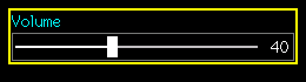
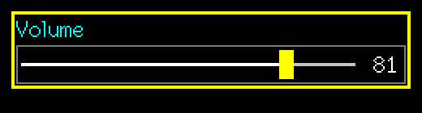

SuperSlider
A horizontal slider with a knob, integer range, step and optional value text.
Editable (modal edit)src/SuperSlider.h
What it looks like


Real renders from the library (headless, dark theme, Font2, shown at 2x).
Quick start
SuperSlider vol(&lcd, 10, 10, 200, &lgfx::fonts::Font2, &Enc, &BtnA, &BtnB);
vol.SetRange(0, 100); vol.SetStep(2); vol.SetValue(40);
vol.SetOnChange([](void*){ setVolume(vol.GetValue()); }); // live previewUnique features
- Knob turns
ColCursorwhile editing. ShowValueprints the number at the right.- Touch picks the value by position: touching jumps the knob to the finger, even when idle.
GUI workflow
Encoder moves the knob by detents x step (speed scaling applies). A short/long = accept, B short = cancel, B long = revert and keep editing. Touch: the value jumps to the finger, dragging keeps moving live, lift accepts.
Event workflow
edit contract. OnChange is the one to use for live effects (volume, brightness); OnAccept to persist.
Main API
| Call | What it does |
|---|---|
SetRange(min,max) | Integer range |
SetStep(s) | Per detent |
SetValue/GetValue | Value |
ShowValue | Number at the right |
Tips and tricks
TipUse a step that divides the range so the last position equals the max.
Pitfalls
Watch outA full-screen slider redraw costs about 7 ms per push on the S3; fine for dragging, but avoid redrawing it every loop pass.